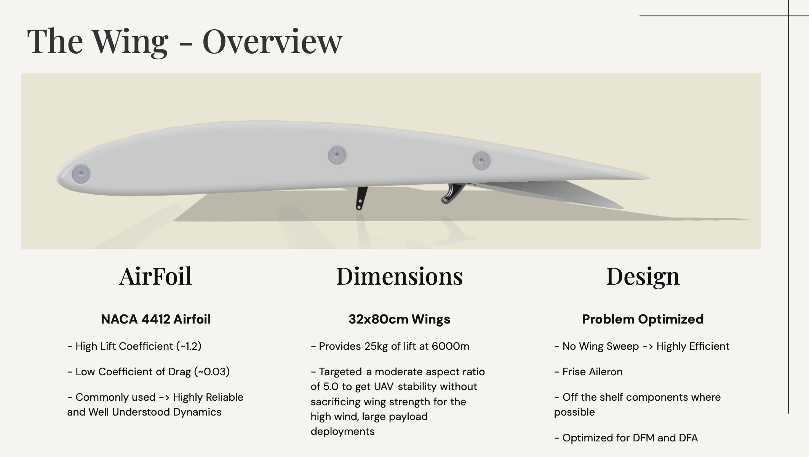
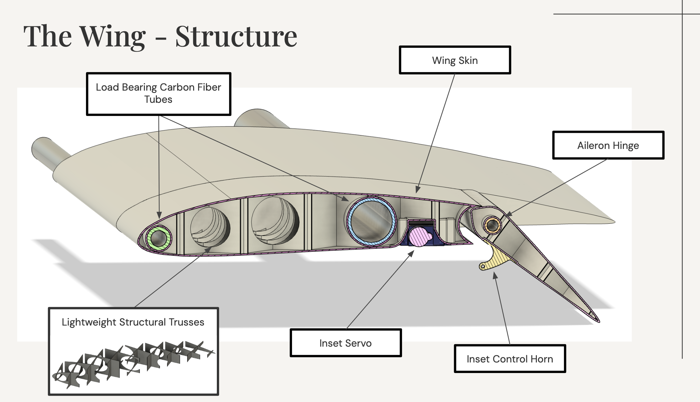
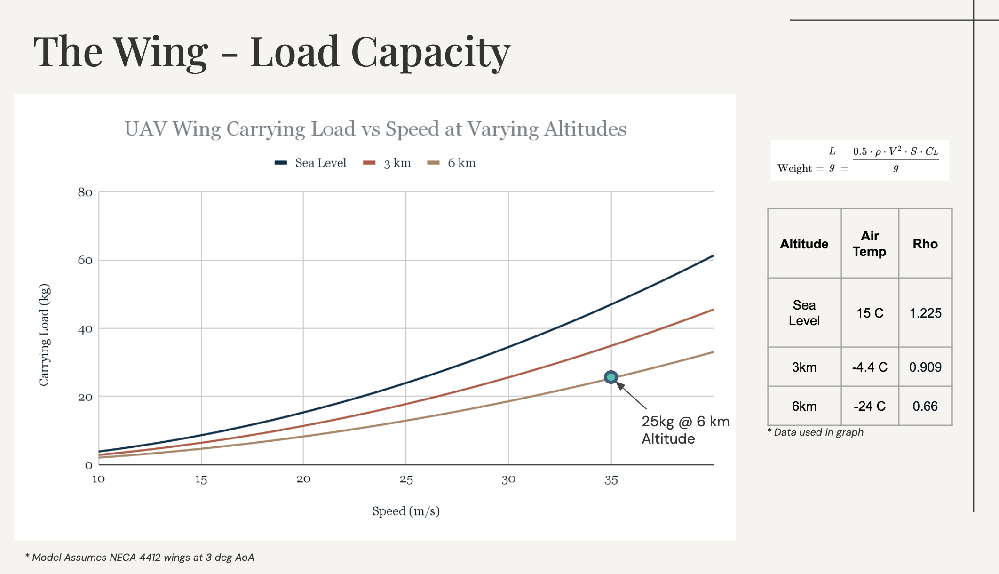
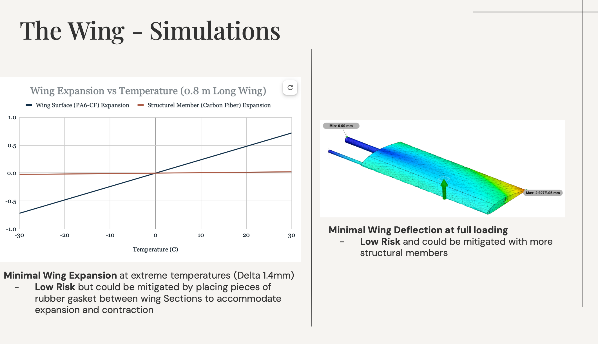
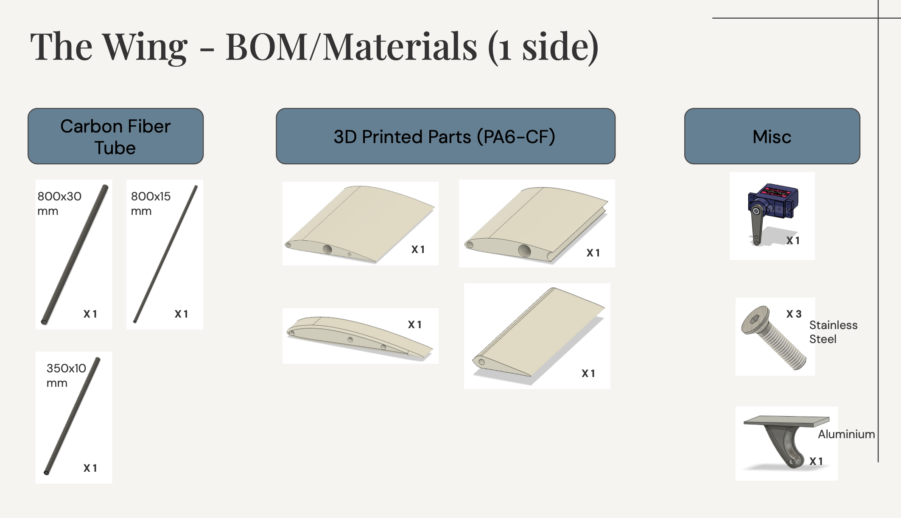

Aerospace Engineering · NACA 4412 · 25 kg lift at 6 km altitude
Full-cycle wing design for a VTOL (Vertical Take-Off and Landing) UAV — from airfoil selection and load analysis through structural design, FEA simulation, and a complete DFM/DFA pass to make the wing buildable with off-the-shelf components. The wing uses a carbon fiber tube spar system with a 3D printed PA6-CF skin, optimized for high-altitude, heavy-payload missions.
NACA 4412 airfoil selected for its high lift coefficient (~1.2), low drag (~0.03), and well-understood flight dynamics. 32×80 cm planform with no sweep — maximizes aerodynamic efficiency. Frise aileron for roll control. Aspect ratio of 5.0 balances span efficiency against structural requirements for high wind, large payload missions. Designed for DFM/DFA from day one — off-the-shelf components wherever possible.

Three carbon fiber tubes form the primary load-bearing spar system (800×30mm, 800×15mm, 350×10mm). The PA6-CF printed skin panels slot over the tube frame. Lightweight structural trusses printed in PA6-CF transmit loads between tubes and resist skin buckling. An inset servo drives the Frise aileron via an integrated control horn — both recessed flush into the wing to minimize drag.

Lift modelled using the standard lift equation across sea level, 3 km, and 6 km altitudes using ISA air density values. At 6 km (ρ = 0.66 kg/m³, −24°C), the wing produces 25 kg of lift at 35 m/s — the design cruise point. At sea level the same speed delivers over 60 kg, giving substantial margin at lower altitudes.

Two key simulations validated the design. Thermal expansion analysis showed a maximum delta of 1.4 mm across the 0.8 m span between −30°C and +30°C — low risk, mitigable with rubber gaskets between wing sections. FEA deflection analysis under full load showed a maximum tip deflection of 2.927×10⁻⁵ mm — effectively zero. Both results confirm the structural design is well within safe operating margins.

The wing was designed around readily available materials to keep cost low and lead times short. Three carbon fiber tubes form the spar structure. Four PA6-CF printed panels make up the wing skin. Hardware is minimal — one servo, three stainless steel screws, and one aluminium control horn bracket.
